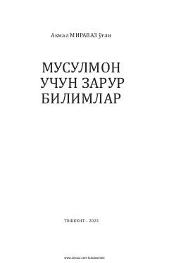

MUIslohat va kundalik hayot uchun zarur diniy bilimlarni o'z ichiga olgan qo'llanma.
Ushbu kitobda Islom dinining asosi bo'lgan ilm va uning qoidalari, imon manzillari, taqdir, fatvo, savdo-sotiq va tib qoidalari haqida aniq ma'lumotlar berilgan. Kundalik hayotda har qadamda duch kelinadigan masalalar sodda va tushunarli tarzda bayon etilgan. Asar keng kitobxonlar ommasiga mo'ljallangan.